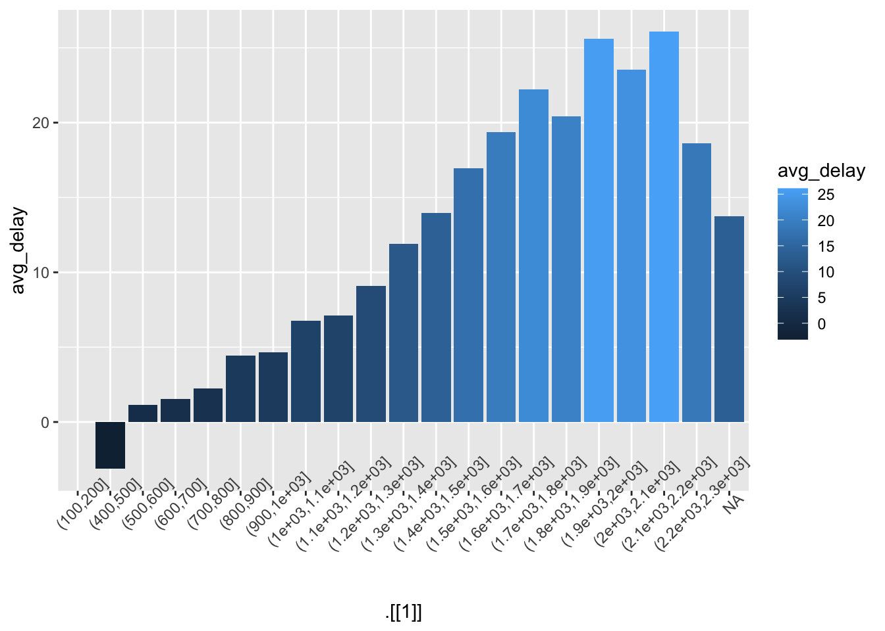
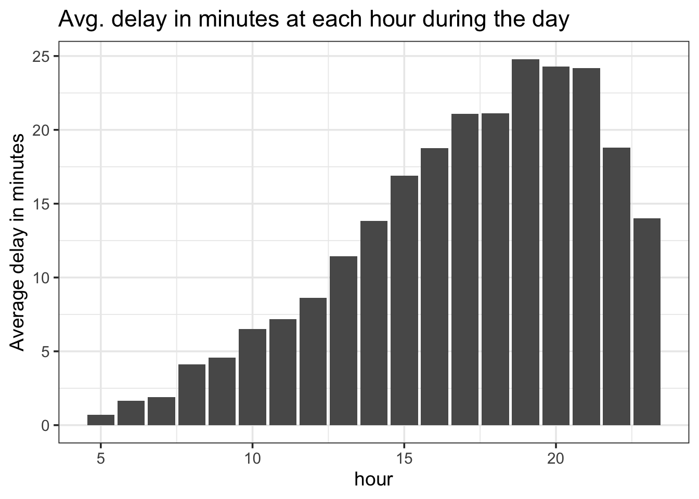
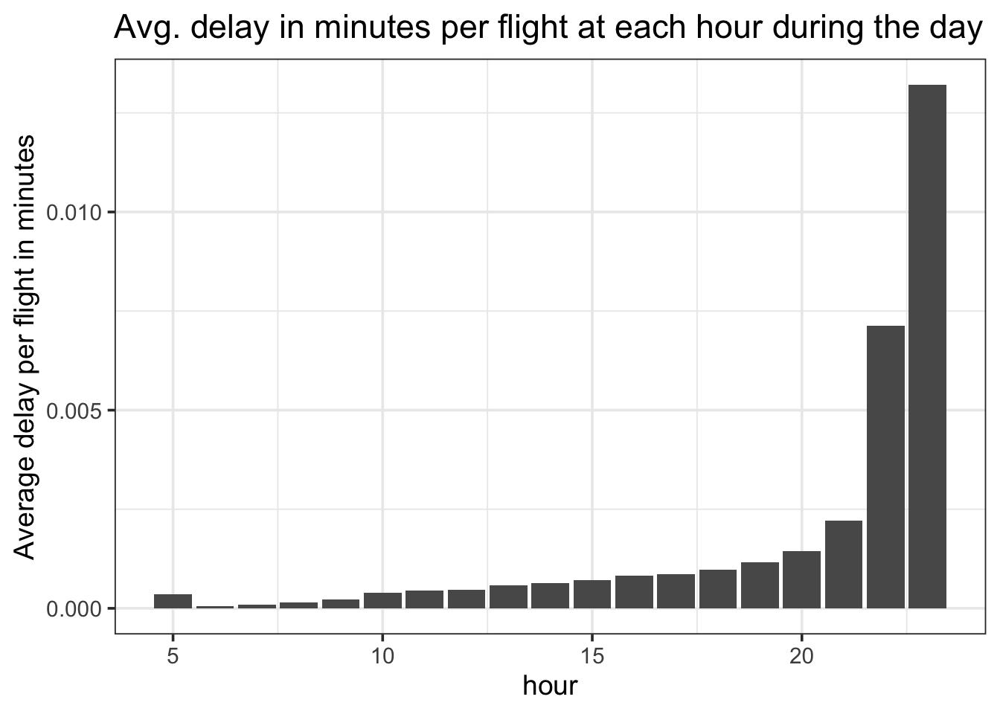

###1.Which carrier has the worst average delays? Challenge: can you disentangle the effects of bad airports vs. bad carriers? Why/why not?
require(nycflights13)
flights %>% group_by(carrier) %>%
summarize(avg_del_carrier = mean(arr_delay, na.rm = TRUE)) %>%
arrange(desc(avg_del_carrier)) %>%
left_join(airlines) %>%
select(avg_del_carrier,name,carrier)## Joining with `by = join_by(carrier)`## # A tibble: 16 × 3
## avg_del_carrier name carrier
## <dbl> <chr> <chr>
## 1 21.9 Frontier Airlines Inc. F9
## 2 20.1 AirTran Airways Corporation FL
## 3 15.8 ExpressJet Airlines Inc. EV
## 4 15.6 Mesa Airlines Inc. YV
## 5 11.9 SkyWest Airlines Inc. OO
## 6 10.8 Envoy Air MQ
## 7 9.65 Southwest Airlines Co. WN
## 8 9.46 JetBlue Airways B6
## 9 7.38 Endeavor Air Inc. 9E
## 10 3.56 United Air Lines Inc. UA
## 11 2.13 US Airways Inc. US
## 12 1.76 Virgin America VX
## 13 1.64 Delta Air Lines Inc. DL
## 14 0.364 American Airlines Inc. AA
## 15 -6.92 Hawaiian Airlines Inc. HA
## 16 -9.93 Alaska Airlines Inc. AS# # second part
#
# df1 <- flights %>% group_by(origin,dest,carrier) %>%
# summarize(avg_arr_delay_pr_carrier_pr_route = mean(arr_delay, na.rm = TRUE)) %>% arrange(carrier)
#
# df2 <- flights %>% group_by(origin,dest)
#
# %>%
# ungroup() %>%
# group_by(carrier) %>%
# summarize(avg_arr_delay_pr_carrier = sum(avg_arr_delay_pr_carrier_pr_route)) %>% arrange(desc(avg_arr_delay_pr_carrier))###2.Find the flights that are most delayed upon departure from each destination.
flights %>% group_by(origin) %>% slice_max(order_by = dep_delay) %>% select(origin, dep_delay, arr_delay)## # A tibble: 3 × 3
## # Groups: origin [3]
## origin dep_delay arr_delay
## <chr> <dbl> <dbl>
## 1 EWR 1126 1109
## 2 JFK 1301 1272
## 3 LGA 911 915###3.How do delays vary over the course of the day. Illustrate your answer with a plot.
#Doesnt work
# flights %>% ggplot(aes(sched_dep_time,mean(!is.na(dep_delay)))) + geom_col(position = "dodge")
flights %>% group_by(cut(sched_dep_time,c(0,
100,
200,
300,
400,
500,
600,
700,
800,
900,
1000,
1100,
1200,
1300,
1400,
1500,
1600,
1700,
1800,
1900,
2000,
2100,
2200,
2300))
) %>% summarise(avg_delay = mean(dep_delay, na.rm=TRUE,),
number_of_flights = n()
) %>%
ggplot(.,aes(.[[1]],avg_delay, fill = avg_delay)) +
geom_col() +
theme(axis.text.x = element_text(angle = 45))## Warning: Use of `.[[1]]` is discouraged.
## ℹ Use `.data[[1]]` instead.## Warning: Removed 1 rows containing missing values
## (`position_stack()`).
flights %>% group_by(hour) %>% summarize(avg_delay = mean(dep_delay, na.rm = TRUE)) %>%
ggplot(aes(hour,avg_delay)) +
geom_col() +
labs(title = "Avg. delay in minutes at each hour during the day",
y = "Average delay in minutes") +
theme_bw(base_size = 14)## Warning: Removed 1 rows containing missing values
## (`position_stack()`).
flights %>% group_by(hour) %>% summarize(n_flights = n())## # A tibble: 20 × 2
## hour n_flights
## <dbl> <int>
## 1 1 1
## 2 5 1953
## 3 6 25951
## 4 7 22821
## 5 8 27242
## 6 9 20312
## 7 10 16708
## 8 11 16033
## 9 12 18181
## 10 13 19956
## 11 14 21706
## 12 15 23888
## 13 16 23002
## 14 17 24426
## 15 18 21783
## 16 19 21441
## 17 20 16739
## 18 21 10933
## 19 22 2639
## 20 23 1061flights %>% group_by(hour) %>% summarize(avg_delay = mean(dep_delay, na.rm = TRUE),
n_flights = n()) %>%
ggplot(aes(hour,avg_delay/n_flights)) +
geom_col() +
labs(title = "Avg. delay in minutes per flight at each hour during the day",
y = "Average delay per flight in minutes") +
theme_bw(base_size = 14)## Warning: Removed 1 rows containing missing values
## (`position_stack()`).
###4.What happens if you supply a negative n to slice_min() and friends?
#removes the last n observations